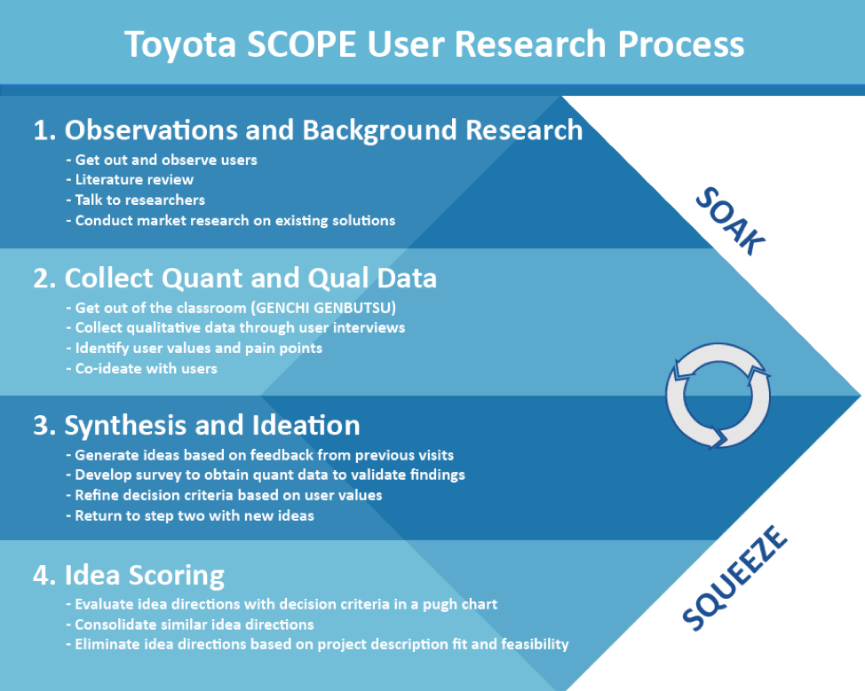
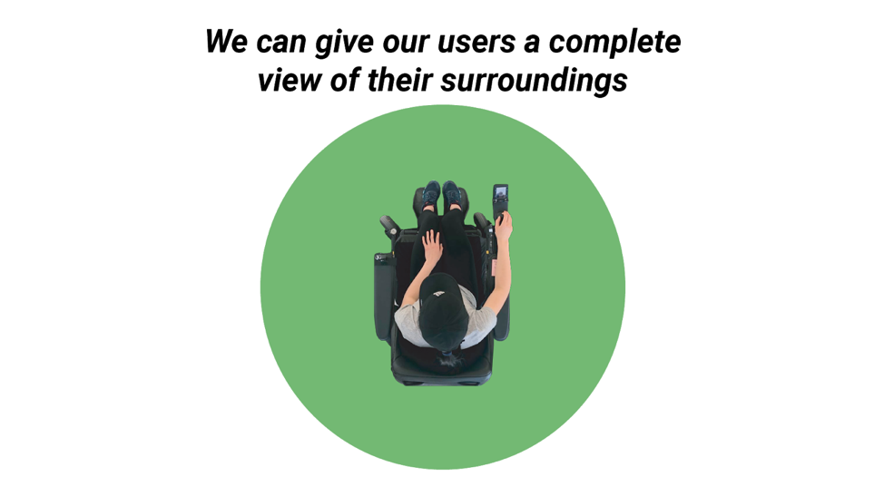
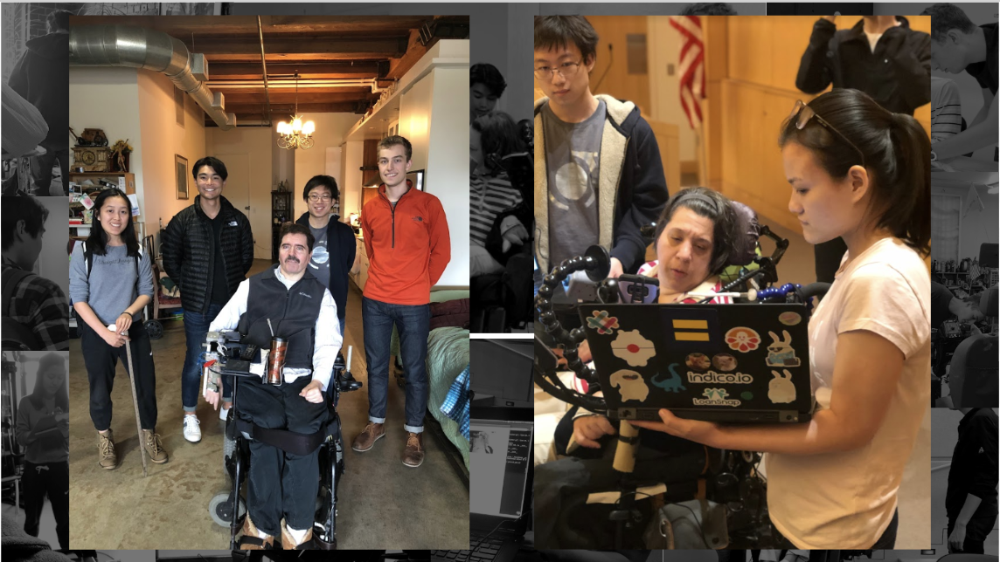

Nearly 1 in 5 persons in the US are currently living with a disability. As the baby boomer generation continues to retire in the next 5-10 years, persons with ambulatory disabilities are projected to increase significantally. For my senior capstone project at the Olin College of Engineering, I along with 4 other team members created a camera system attachment to improve the proprioception for people who use power wheelchairs to help them naviagate more places comfortably.

With a goal of identifying, understanding, and collaboratively designing a sensing and control solution for an issue power wheelchair users face, we set out to interact with users and observe existing assistive technologies. Throughout the first four months of the project, the team was able to synthesize insights, identify common pain points, and distill shared values among power wheelchair users. We met with users to collaboratively develop a suite of potential project directions and narrowed to a single project direction based on users’ values and feedback.
The design process we followed to choose a project direction is shown in the Toyota SCOPE User Research Process figure.
After interviewing about 100 users through in-person interviews and survery responses, we found that one of the most important values our users wanted in a product was to maintain their personal autonomy, which is the desire to do things independently.
We found that a lot of products in the power wheelchair industry that take away any control from the user do very poorly. Many autonomous wheelchair teams have approached the concept of autonomous power wheelchairs from a technology-first perspective, but so far, there has not been a market for these technologies. Even though autonomous control of power wheelchairs can be a more efficient and safer way for some users to navigate, the market for it does not currently exist because such technology, implemented the way that it is currently, limits the users’ autonomy by completing tasks for the user, instead of helping them accomplish the tasks.
For our final product we wanted to ensure our design only enhanced our user's abilities and did not take away anything they have the ability to do. Here is what our camera system does for our users...



Our final prototype was designed with and tested by users. It's a human-first design, not tech-first.